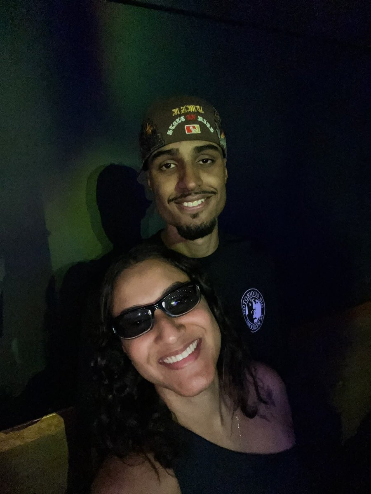
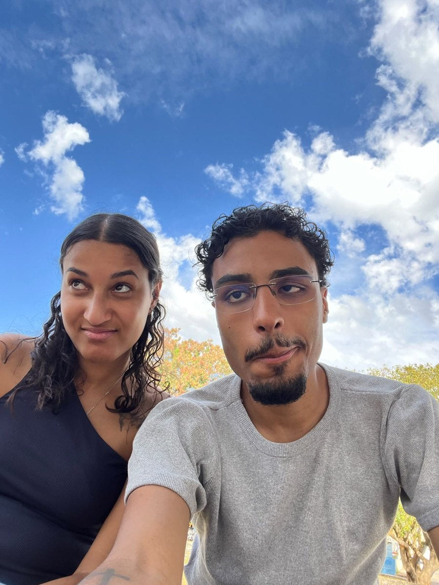
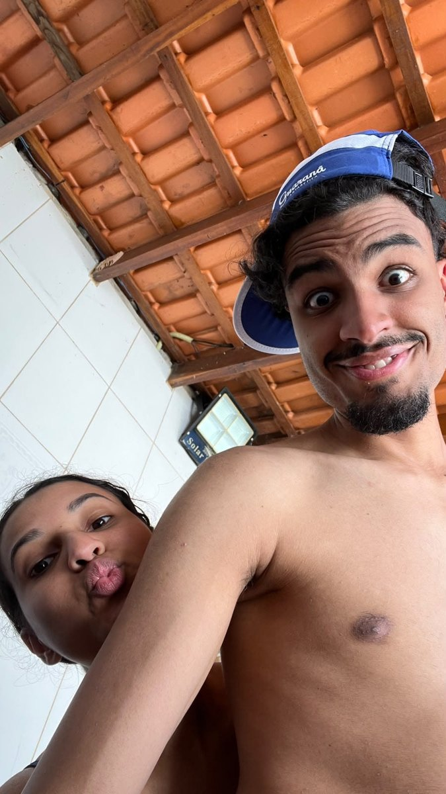
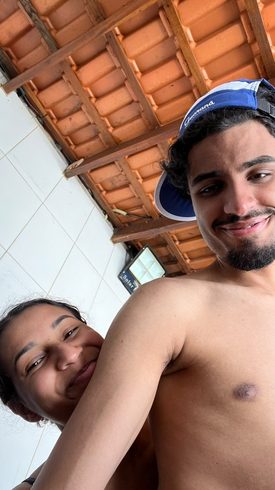
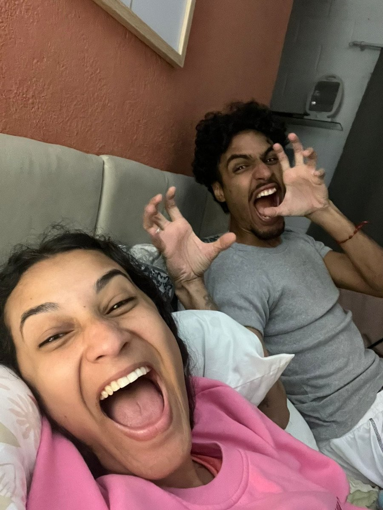
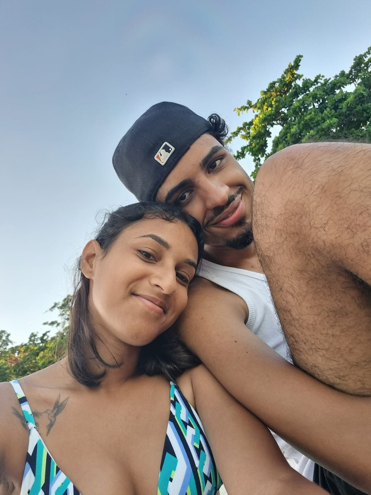
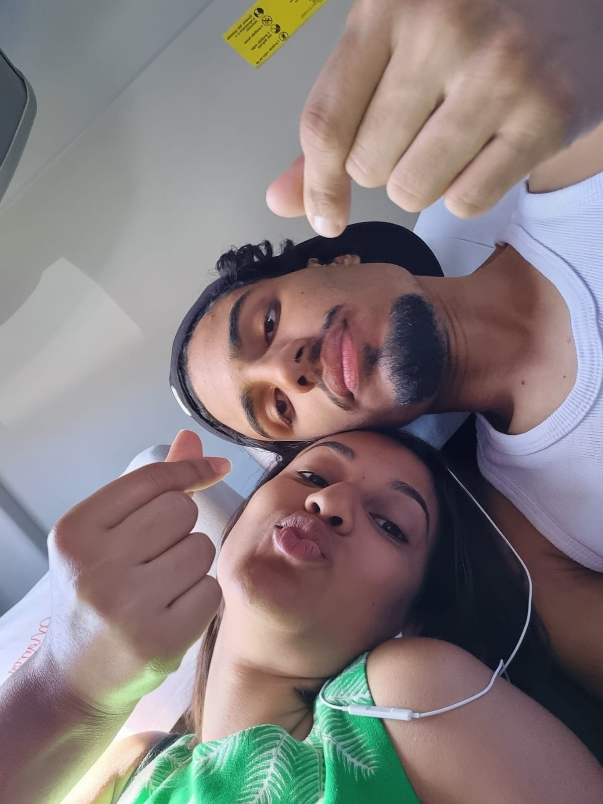

Para o meu Nego ♡
Entre tantas estrelas no céu, uma das minhas histórias favoritas é a nossa. Preparei esse cantinho com amor, para você descobrir cada pedacinho do que mora no meu coração.
✧ Segredinhos do meu coração
Toque nas estrelinhas, Nego. Cada uma guarda uma mensagem para você.
☾ Nossas lembranças
Tem momentos que ficam guardados na memória como se o universo tivesse parado só para a gente.
A noite estava linda, o cheiro e a brisa do mar tocando nossa pele, a Lua estava perfeita e foi um dia perfeito. Uma lembrança que sempre vou levar comigo.
Foi tão leve e gostoso… não poderia ter sido de outra forma. Um começo tão nosso, que guardo com muito carinho no coração.







♫ A nossa música
“Amor dos Deuses”, do Fundo de Quintal — porque algumas canções parecem encontrar um jeitinho de falar pela gente. ❤️
O link abre a busca da música no Spotify; se quiser, depois podemos trocar pelo link exato da faixa.
✉ Meu sol, meu bem, meu mar.
Nego, esta é a parte mais importante: as palavras que escrevi para você.
Meu sol, meu bem, meu mar.
Você é a minha pessoa preferida, algumas palavras ficam pequenas quando é pra falar do nosso amor; Eu te quero a vida toda, sempre juntinhos do nosso jeito.
Eu sempre soube que queria você, só não te conhecia ainda, eu precisava de ti. Te sentir, sentir teu cheiro, sentir o calor do nosso amor. Eu amo tudo em ti, seu sorriso que ilumina os meus dias, os olhos brilhantes como as estrelas do meu céu, seus cabelos enrolados, encaracolados que me envolvem em teu amor.
Não sei se é certo dizer que a gente tem sorte em poder sentir e viver o AMOR, mas não é simplesmente um amor, é o nosso amor diferente de tudo que já sentimos e só nós sabemos a emoção e os sentimentos que tomam conta do nosso coração, sonhar em nos casarmos, formar uma família, viver sonhos e planos ao teu lado, poder desfrutar da vida, do nossos esforço; Porém a cima de tudo vivermos a VIDA, você me trouxe a vida de volta a vontade de viver cada dia com paixão e alegria, de enxergar a beleza da vida em cada detalhe que está ao nosso redor, de poder transmitir o melhor que há dentro de nós mesmos.
Acho que nenhum de nós dois imaginávamos poder viver tudo que já vivemos até aqui e tudo que vamos viver ainda, os planos dele sempre são maiores e melhores que os nossos, o medo de perdemos um ao outro é real e dói só de pensar. O mesmo que me deu você pode te tirar de mim a qualquer momento é um medo que mora dentro de mim, só peço sua proteção e que possamos viver uma vida inteira juntos.
Eu não me imagino sem você aqui comigo, ao meu lado, tenho medo de esquecer o seu cheiro, o cheiro da pessoa que eu amo, medo de esquecer as sensações que eu sinto quando você me toca, o seu olhar pra mim, o sorriso sempre que nos encontramos que vem sem pedir permissão a alegria que transborda em mim ao estar ao seu lado.
Te vejo de longe e só sei sorrir, sentir e te amar cada vez mais como se fosse a primeira vez, obrigada por fazer eu me sentir a mulher mais feliz e amada do universo, eu te quero e te quero a todo instante, como a Lua e o Sol em um único sistema solar e se amando em vida, mesmo com a distancia eu te vejo e te amo.
Quando eu te conheci eu sabia que eu iria viver algo que nunca tinha sentido ou vivido na vida, e eu estava certa em me abrir com você e te deixar entrar no meu coração, não me arrependo nenhum minuto sequer, na nossa viagem da praia eu tive mais certeza ainda de que era você, que somos um do outro, feitos um para o outro, que era amor de verdade.
Eu poderia te dedicar todas as canções de amor, e são infinitas canções, e essa sou eu.
Sua namorada, com meu jeitinho de ser, de amar, viver, cuidar, sentir demais, ser feliz com o simples, apaixonada pela vida, por praias, mares, lugares, animais, e tudo de mais lindo que o mundo tem, a que chora por quase tudo, ser emotiva com tudo que me tocar, sorrir acima de tudo, a pessoa que mais fala “Males que vens pra bem”. Que bom que sou amada por ti exatamente como eu sou sem precisar me esconder, com a minha autenticidade, o meu eu de verdade, a Joyce de verdade.
Eu te conheço não só como meu namorado, mas como meu companheiro, parceiro, meu melhor amigo, confidente de segredos e medos, eu te amo por completo meu Fernando. ♡
Uma última estrelinha para você
Chegou a última surpresa, meu Nego.
Nunca se viu tanto amor assim tão diferente
O amor dos deuses invejei
O amor dos deuses a gente vive, a gente sente
Eu amo cada parte de ti
Obrigada por tudo, todo o carinho
cuidado, amor, proteção
obrigada pela cumplicidade que a gente tem
um com o outro
Eu te amo bastantão Nego ♡